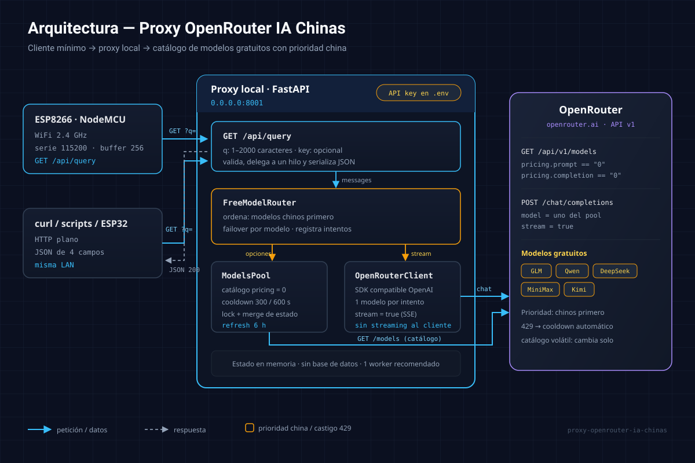
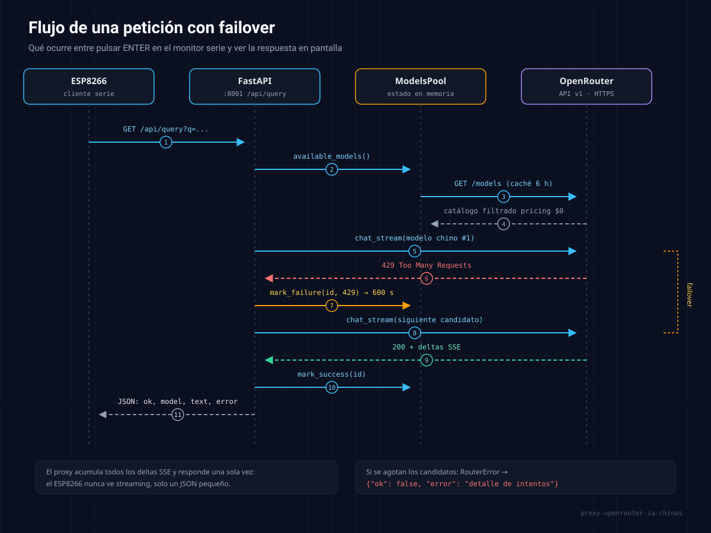

proxy-openrouter-ia-chinas
26 archivosFastAPI con descubrimiento de modelos, prioridad china, failover y GET /api/query.
Ver carpetaGateway local FastAPI que descubre modelos gratuitos de OpenRouter, prioriza proveedores chinos y responde JSON.

Proxy OpenRouter IA Chinas es un servicio HTTP local que centraliza el acceso a modelos gratuitos de OpenRouter para otros programas. Descubre el catálogo al arrancar, filtra los modelos de precio cero, prioriza proveedores chinos y expone un único GET /api/query que devuelve JSON con cuatro campos: ok, modelo, texto y error.
Existe porque integrar OpenRouter en varios proyectos obliga a repetir descubrimiento, orden de proveedores y manejo de errores en cada cliente. Acá esas decisiones viven en un solo proceso y se cambian sin tocar a los consumidores. El cliente de referencia es un ESP8266 con ArduinoJson y 8 KB de buffer, lo que fija el contrato: sin streaming, campos planos y respuestas acotadas. No tiene autenticación y está pensado para localhost.
Cada carpeta conserva una etapa del proyecto. No se borraron las anteriores: se pusieron en contexto.
FastAPI con descubrimiento de modelos, prioridad china, failover y GET /api/query.
Ver carpetaEl micro no necesita entender de tokens, modelos ni claves: solo necesita una URL que le devuelva texto útil.
Los modelos interesantes viven detrás de APIs con JSON, cabeceras y claves. Un ESP8266 tiene poca RAM y ninguna ganas de implementing TLS con un cliente HTTP completo. Además, los modelos gratuitos cambian de disponibilidad y devuelven 429 sin avisar.
Un proxy FastAPI mantiene el pool de modelos, elige primero los modelos chinos disponibles, rota ante errores y devuelve una respuesta compacta. El firmware solo llama a /api/query?q=... y muestra el texto.
Del pulsador al modelo, sin que el micro se entere de la complejidad.
El ESP8266 envía el texto a GET /api/query?q=... por HTTP. Sin SDK, sin claves y sin JSON elaborado.
FastAPI consulta su pool de modelos $0, prioriza los modelos chinos y descarta los que están en cooldown.
Un 429 o un timeout no cortan la experiencia: el proxy pasa al siguiente candidato y registra el incidente.
El micro recibe un cuerpo corto y legible, listo para mostrar en pantalla o leer por serial.
El proxy concentra credenciales, selección y resiliencia; el firmware queda deliberadamente tonto.

El pool prioriza modelos chinos y gratuitos, pero mantiene alternativas para no depender de un solo proveedor.
Cuando un modelo devuelve 429, se marca y se saca de rotación temporalmente. El siguiente request no vuelve a tropezar.
El micro nunca ve la API key ni el catálogo completo. Solo ve una URL y un texto.
Cada decisión está pensada para que el cliente más débil sea el que menos complejidad cargue.
Si el primer modelo falla, el proxy prueba el siguiente sin cambiar el contrato del cliente.
Los modelos saturados descansan y vuelven solos cuando termina la ventana.
La credencial vive en el servidor. El ESP8266 no guarda secretos.
Diseñado para clientes con poca RAM: sin OAuth, sin SDK y sin payloads grandes.
Los modelos y prioridades se editan en configuración, no en el firmware.
El texto se devuelve listo para pantalla o para el puerto serial.
Los diagramas se mantienen en el repositorio y se actualizan con el código.


FastAPI y httpx del lado servidor; ArduinoJson y ESP8266WiFi del lado micro. El firmware es un cliente HTTP deliberadamente simple.
Python 3.9+ FastAPI httpx OpenRouter ESP8266 ArduinoJson PlatformIO La clave de OpenRouter se configura por entorno. No se versiona.
proxy-openrouter · arranque
$ python3 -m venv .venv $ source .venv/bin/activate $ pip install -r requirements.txt $ export OPENROUTER_API_KEY=[REDACTED] $ uvicorn app:app --host 0.0.0.0 --port 8001
Cada decisión, cada límite y cada comando están documentados en el repositorio. Sin folletos: lo que funciona se muestra, lo que no, también.
Instalación, configuración, firmware, contrato HTTP y límites.
Puesta en marcha, variables, endpoints, códigos de error y mantenimiento.
Módulos, pool de modelos, cooldown, failover y cómo extenderlo.
OpenRouter, FastAPI, ArduinoJson y documentación del ESP8266.
Las primeras versiones existen para que estos errores no se repitan: cada una dejó una decisión de diseño verificable.
OpenRouterClient.chat_stream es un generador y el router marcaba éxito al crearlo, no al iterarlo. Un 429 al abrir el stream no disparaba failover ni cooldown, y salía como error interno. Quedó registrado como la deuda funcional principal del proyecto; la corrección pasa por consumir el primer fragmento dentro del try.
El ESP8266 no conectaba y el monitor serie mostraba fallo tras veinte segundos. La red disponible era de 5 GHz y el chip solo asocia 2.4 GHz. Se usó el SSID gemelo de 2.4 GHz en la misma subred y el firmware documentó la restricción.
Con respuestas largas el firmware devolvía «No se pudo parsear JSON»: el DynamicJsonDocument de 8192 bytes no alcanzaba para el texto en UTF-8 más el envelope. Se mantuvo el buffer y se aceptaron respuestas moderadas; quedó pendiente calcular la capacidad o limitar caracteres en el servidor.
Seis criterios con la misma escala en todo el catálogo, para comparar sin marketing.
Comparten idea, pero este expone JSON para programas y el otro una interfaz de chat.
GET /api/query, documentado en el README.
Sí. Sin OPENROUTER_API_KEY no hay acceso a modelos.
Es una preferencia del autor por costo/latencia; el orden se puede cambiar.
No. Está pensado para localhost.
Usá esta familia como base para proxy openrouter ia chinas. Está documentada para que puedas entenderla, ejecutarla y continuarla sin adivinar.